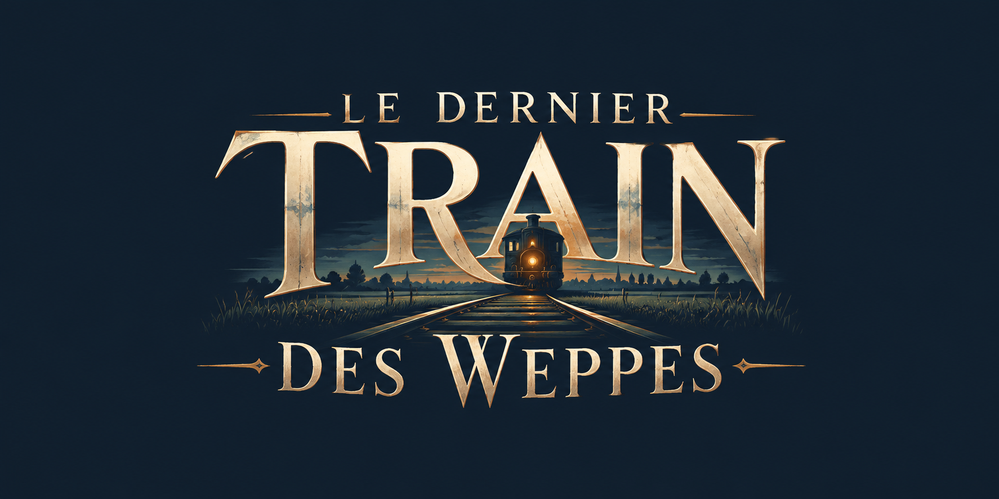

Au weppe, ce qui est parti revient.
Fournes-en-Weppes, nuit du 1er au 2 novembre 2026. La vieille gare s'effondre sous l'orage. À la résidence des Weppes, une horloge se remet en marche.
L'heure où, parfois, ce qui est parti revient.
Dans les Weppes, les anciens disaient « au weppe » pour dire « au soir ». C'est l'heure où l'on rentre les bêtes et où l'on ferme les volets.
Le Dernier Train des Weppes est un jeu d'aventure en point & click qui se joue directement dans le navigateur. Explorez la chambre de Gisèle à la résidence des Weppes, observez, fouillez, et reconstituez ce que la nuit de l'orage a réveillé.

Un terroir réel
Fournes-en-Weppes, sa gare, ses moulins et son patois servent de décor et de matière au récit.
Observer, cliquer, comprendre
Chaque objet de la pièce raconte quelque chose : une photo, une horloge arrêtée, une boîte en fer fermée à clé.
Sans installation
Le jeu tourne dans le navigateur. Jouez sans compte, ou créez-en un pour reprendre votre partie sur n'importe quel appareil.
La nuit de l'orage
Le voyage est en cours
Le jeu se construit étape par étape. Le prototype ouvrira d'abord aux inscrits de la liste d'attente.
Voir la feuille de routePrototype navigateur
Écran d'accueil, intro animée, menu, sauvegarde et comptes
Cinématique d'ouverture
L'orage, l'effondrement de la gare, l'horloge qui repart
Acte 1 · Chapitre 1 « La panne »
Arrivée à la résidence des Weppes, chambre de Gisèle jouable
Suite de l'Acte 1
Énigmes, nouveaux lieux et personnages
Démo publique
Un premier acte complet, ouvert à tous
La chambre de Gisèle prend vie
Premier décor jouable : la télévision, le bouton d'appel, l'horloge arrêtée et une boîte en fer qui garde son secret.

L'horloge s'est remise en marche
La cinématique d'ouverture est terminée : l'orage, l'effondrement de la gare et une horloge qui repart d'elle-même.
Premier prototype jouable
Le jeu s'ouvre dans le navigateur : écran d'accueil, menu animé, musique et sauvegarde de partie.
Ils accompagnent le voyage
Collectivités, acteurs du patrimoine et entreprises des Weppes : rejoignez le projet et faites découvrir le territoire autrement.

Soyez parmi les premiers à monter à bord
Le prototype n'est pas encore ouvert au public. Inscrivez-vous pour y accéder en avant-première et suivre l'avancement du jeu.